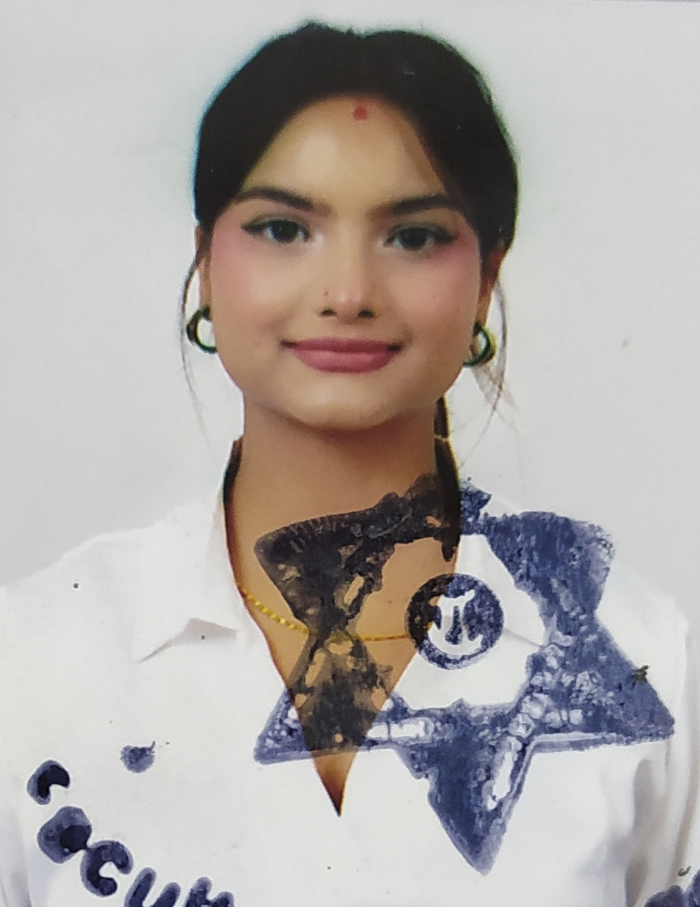

Krisha Sharma

Objective Statement
I’m deeply passionate about Artificial Intelligence and Machine Learning, leveraging data-driven insights to design smarter, more adaptive digital solutions. Backed by a certification in Data Science and Machine Learning, I enjoy exploring how intelligent systems can enhance the way users interact with technology and make everyday experiences more intuitive.Alongside my AI and ML focus, I have a keen interest in web design and development, which I’ve cultivated through self-taught learning and hands-on practice. This allows me to combine creativity and technical skill to craft visually engaging, user-centric digital experiences. My background in digital marketing and user-focused strategy further strengthens my ability to build products that are not only functional but also impactful and aligned with real-world user needs.
Driven by curiosity and a creative mindset, I strive to merge intelligent technology with thoughtful design, transforming innovative ideas into meaningful, data-powered experiences.
Education
- Secondary Education Examination
Nightingale International Secondary School
- School Leaving Certificate
Saint Mary's High School
- Bachelors in Information and Management
Nepal Commerce Campus
Work Experience
Interpreter
Astro Veda
2022 May - 2022 July
- Maintained message content, tone, and emotion as closely as possible.
- Utilized active listening skills and cultural sensitivity to convey accurate
interpretations.
- Built and maintained relationships with clients to boost possibility of future
collaborations.
- Provided cultural input to speakers to help parties who did not speak similar
languages communicate with and understand one another.
- Attended training programs to improve professional knowledge and
interpretation skills.
Administration assistant
PS Engineering Company
2022 September - 2024 May
- Handling correspondence, including answering phones, routing calls, managing
email inboxes, taking messages, and responding to inquiries.
- Organizing and maintaining schedules, and setting up appointments.
- Creating, formatting, editing, and proofreading documents such as memos, reports and presentations.
- Supporting various projects by performing research, compiling data, and
coordinating with other departments or team members.
- Greeting visitors, clients, or customers and providing them with outstanding
customer service.
Digital Marketer
Sync Solutions
July 2024 - September 2024
- Managed social media accounts, growing the audience by 30% with engaging contents.
- Launched and optimized ads on platforms like Instagram Ads and Facebook Ads, lowering costs while reaching more people.
- Worked with writers and designers to create content that not only looked great but also performed well.
- Kept up with digital marketing trends to make sure strategies stayed fresh and effective.
- Developed and implemented data-driven digital marketing strategies
Skills
- Software Expertise (Microsoft
Powerpoint, Canva)
- Language Proficiency (English, Nepali, Hindi)
- Data Entry and Documentation (Excel, Word)
- Persuasive communication style
- Negotiations strength
- Team collaboration
Contact me through the following link
Contact Details
Email : krishasharma541@gmail.com
Facebook : Krisha Sharma
Instagram : krishasharmapoudel